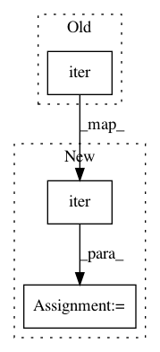

87fae36b27172c5253d62167d808b4ef83665f71,gluonnlp/data/stream.py,_LazyTransformDataStream,__iter__,#_LazyTransformDataStream#,164
Before Change
self._fn = fn
def __iter__(self):
for item in iter(self._stream):
yield self._fn(item)
class CorpusStream(DataStream):
After Change
self._fn = fn
def __iter__(self):
stream_iter = iter(self._stream)
try:
item = next(stream_iter)
except StopIteration:
return
istuple = isinstance(item, tuple)
if istuple:
In pattern: SUPERPATTERN
Frequency: 3
Non-data size: 3
Instances
Project Name: dmlc/gluon-nlp
Commit Name: 87fae36b27172c5253d62167d808b4ef83665f71
Time: 2018-08-03
Author: leonard@lausen.nl
File Name: gluonnlp/data/stream.py
Class Name: _LazyTransformDataStream
Method Name: __iter__
Project Name: chainer/chainercv
Commit Name: 0c1fa98633a568dd77dd3ff62a23d8f680a1658d
Time: 2018-06-10
Author: yuyuniitani@gmail.com
File Name: chainercv/evaluations/eval_detection_coco.py
Class Name:
Method Name: eval_detection_coco
Project Name: dmlc/gluon-nlp
Commit Name: 89b41bdfb98a27f64d6331a524b83d9665cdd8ba
Time: 2019-10-21
Author: linhaibin.eric@gmail.com
File Name: scripts/bert/data/dataloader.py
Class Name: _MultiWorkerIter
Method Name: __init__